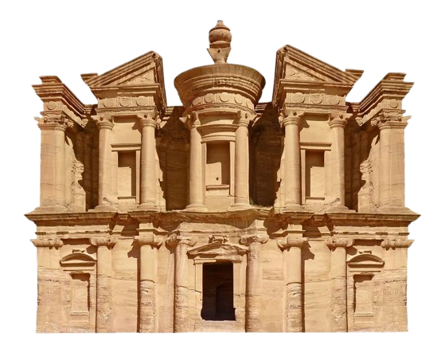

CUDA ŚWIATA
ANKIETA
TABELA
MULTIMEDIA

Imię:
Email:
Który z 7 cudów świata jest Twoim ulubionym?
Taj Mahal
Wielki Mur Chiński
Machu Picchu
Chrystus Odkupiciel
Petra
Chichen Itza
Koloseum
Ile długości ma Wielki Mur Chiński?
13,170 km
21,196 km
8,850 km
10,000 km
Które z cudów świata znajdują się w Azji
Tadż Mahal
Machu Picchu
Petra
Wielki Mur Chiński
Chichen Itza
Który cud świata chciałbyś odwiedzić w przyszłości i dlaczego
Czy uważasz, że lista 7 cudów świata powinna być aktualizowana?
Tak
Nie
Jak bardzo zainteresowany jesteś cudami świata?
Wyślij
Wyczyść